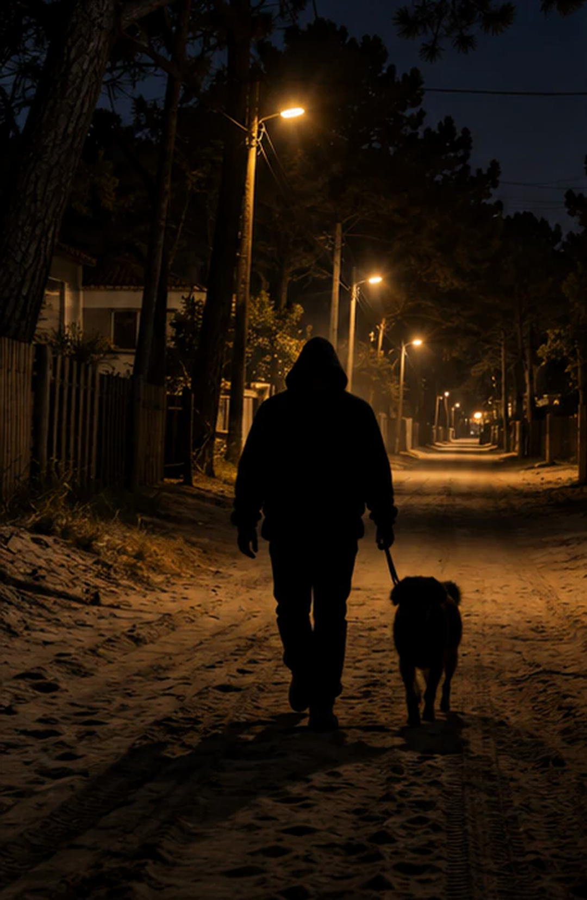
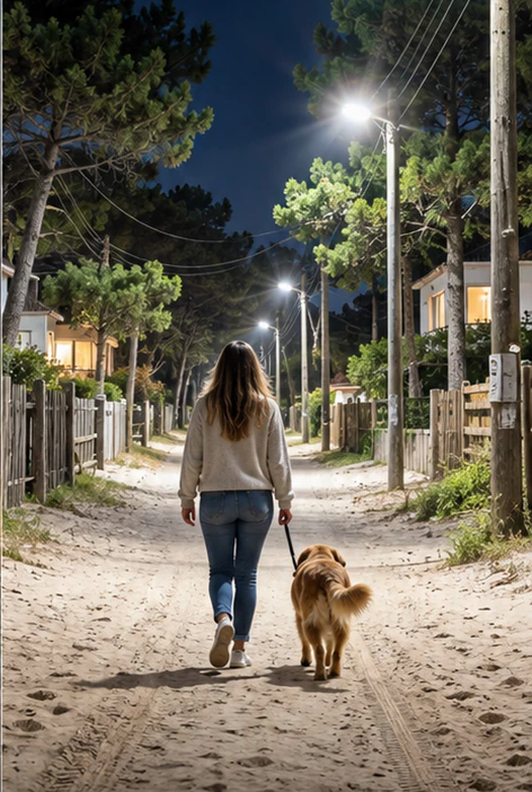

<!doctype html>
<html lang="es-AR">
<head>
<meta charset="utf-8">
<style>
  /* Placas para redes. Mismo lenguaje que el reel y la web: fondo de escena,
     etiqueta "VILLA GESELL · LED", títulos pesados en blanco, remate en verde.
     El texto va arriba y abajo: nunca sobre la mujer ni el perro. */
  :root{--verde:#80f18c;--blanco:#f7f8fa}
  html,body{margin:0;background:#061320}
  .placa{position:relative;width:1080px;overflow:hidden;font-family:"Inter Display","Inter",Arial,sans-serif;color:var(--blanco)}
  .placa.feed{height:1350px}
  .placa.historia{height:1920px}
  .placa img{position:absolute;inset:0;width:100%;height:100%;object-fit:cover;object-position:center 55%}
  .placa.oscura img{filter:brightness(.85) contrast(1.1)}
  .velo{position:absolute;inset:0;background:linear-gradient(to bottom,#00101ad9 0,#00101a80 20%,transparent 40%,transparent 68%,#030d18cc 88%,#030d18f0 100%)}
  .arriba,.abajo{position:absolute;left:72px;right:72px;text-shadow:0 4px 22px #000c,0 0 40px #0008}
  .arriba{top:72px}
  .abajo{bottom:72px}
  .tag{display:inline-block;border:2px solid #ffffffb0;border-radius:12px;padding:12px 22px;font-size:26px;font-weight:700;letter-spacing:.06em;background:#04141dcc;margin-bottom:34px}
  h1{margin:0;font-size:118px;line-height:1.04;letter-spacing:-.03em;font-weight:900;max-width:900px}
  h1.chico{font-size:104px}
  h1 em{font-style:normal;color:var(--verde)}
  .sub{font-size:40px;font-weight:700;line-height:1.25;text-transform:uppercase;letter-spacing:.01em;max-width:820px}
  .compra{font-size:46px;font-weight:700;line-height:1.25;max-width:860px}
  .beneficios{display:flex;gap:28px;white-space:nowrap;font-size:33px;font-weight:700;margin-bottom:28px}
  .beneficios span:before{content:"\2733";color:var(--verde);margin-right:12px}
  .linea{height:4px;background:var(--verde);width:100%}
  .pastilla{display:inline-flex;align-items:center;gap:18px;border:3px solid #ffffffd0;border-radius:60px;padding:22px 40px;font-size:34px;font-weight:800;letter-spacing:.02em;background:#04141dd9;margin-top:36px}
  .pastilla svg{width:40px;height:40px}
  .pie{font-size:26px;font-weight:600;letter-spacing:.08em;opacity:.85;margin-top:30px}
</style>
</head>
<body>
<div id="raiz"></div>
<script>
const PLACAS = {
  // ── Carrusel 4:5 ──
  feed1: `<div class="placa feed oscura"><div class="velo"></div>
    <div class="arriba"><div class="tag">VILLA GESELL · LED</div><h1>¿QUÉ VES<br>EN ESTA<br>IMAGEN?</h1></div>
    <div class="abajo"><div class="sub">Cuando la luz no alcanza,<br>no todo es lo que parece.</div>
    <div class="pastilla">DESLIZÁ PARA ENCENDER LA LUZ <svg viewBox="0 0 24 24" fill="none" stroke="currentColor" stroke-width="2.6" stroke-linecap="round" stroke-linejoin="round"><path d="M5 12h14M13 6l6 6-6 6"/></svg></div></div></div>`,
  feed2: `<div class="placa feed"><div class="velo"></div>
    <div class="arriba"><div class="tag">VILLA GESELL · LED</div><h1 class="chico">NO ERA LO<br>QUE PARECÍA.<br><em>FALTABA LUZ.</em></h1></div>
    <div class="abajo"><div class="compra">La Municipalidad de Villa Gesell compró nuevas luminarias LED.</div></div></div>`,
  feed3: `<div class="placa feed"><div class="velo"></div>
    <div class="arriba"><div class="tag">VILLA GESELL · LED</div><h1 class="chico">PARA QUE<br>VEAS MEJOR.<br><em>UNA GESTIÓN<br>QUE SE VE.</em></h1></div>
    <div class="abajo"><div class="beneficios"><span>Más potencia.</span><span>Más visibilidad.</span><span>Más seguridad.</span></div><div class="linea"></div><div class="pie">ALUMBRADO PÚBLICO · MUNICIPALIDAD DE VILLA GESELL</div></div></div>`,
  // ── Guía de encuesta sobre la historia 1 ──
  guia: `<div class="placa historia">
    <div style="position:absolute;left:60px;top:1330px;width:520px;height:300px;border:6px dashed #80f18c;border-radius:28px;background:#80f18c22"></div>
    <div style="position:absolute;left:60px;top:1250px;font-size:34px;font-weight:800;color:#80f18c;text-shadow:0 2px 12px #000">ACÁ VA EL STICKER DE ENCUESTA</div>
    <div style="position:absolute;left:72px;right:72px;bottom:60px;font-size:30px;line-height:1.35;font-weight:600;background:#04141dd9;padding:28px 32px;border-radius:20px">Guía (no publicar): al subir la historia 1, agregá el sticker «Encuesta» de Instagram en la zona marcada. Pregunta: <b>¿Qué ves en esta imagen?</b> · Opciones: <b>Alguien sospechoso</b> / <b>No se ve bien</b>. La historia 2 responde.</div></div>`,
};
const k = location.hash.slice(1) || "feed1";
document.getElementById("raiz").innerHTML = PLACAS[k];
</script>
</body>
</html>
